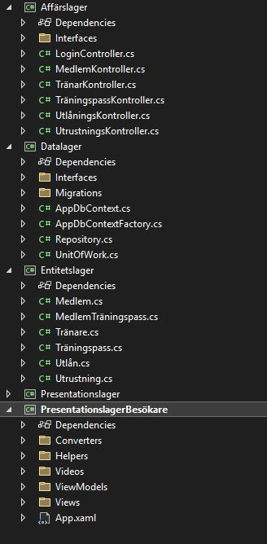
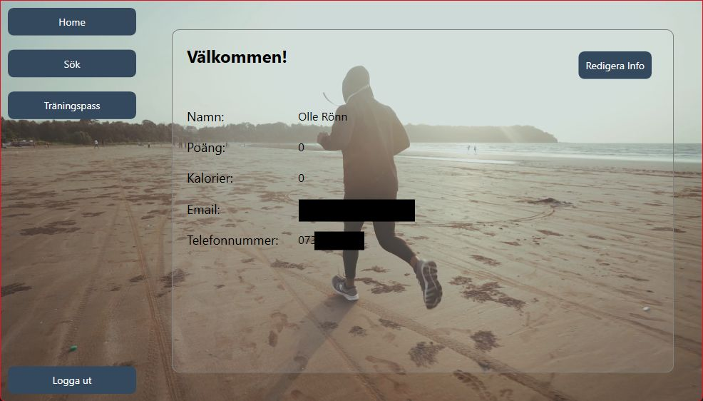
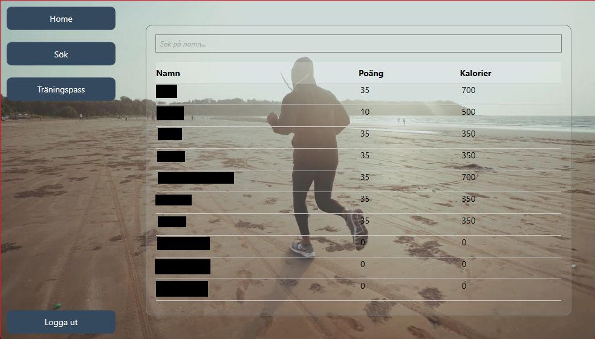
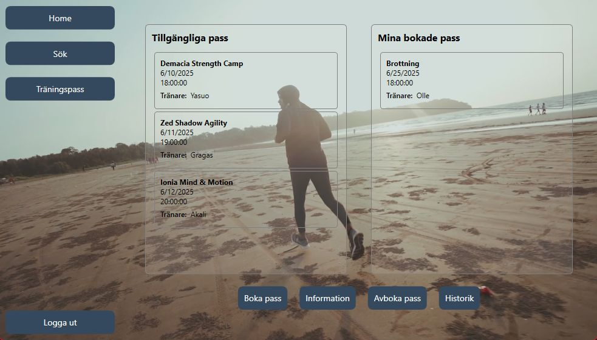
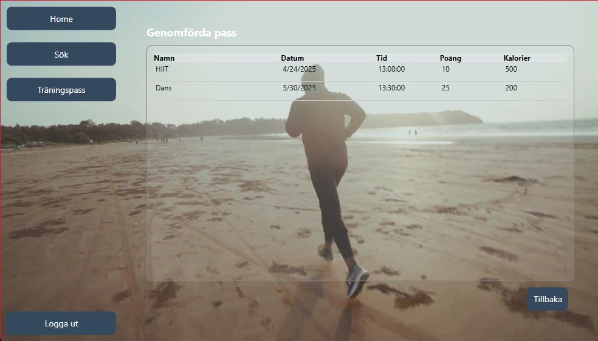
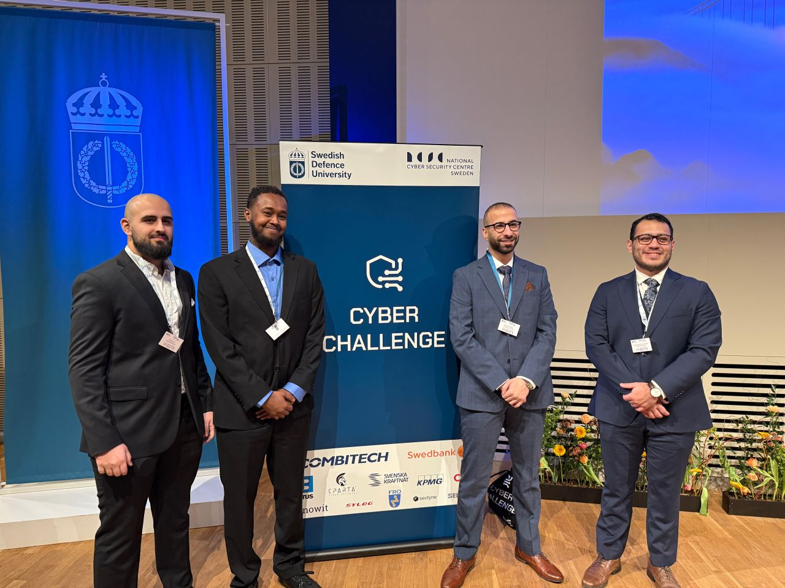

Dual boot med grub och Apache2 webbserver
2026-02-14
Allt startade med ett intresse för linux.
Så jag bestämde mig för att installera Ubuntu på min dator.
Jag bestämde mig för att skapa en webbserver i apache2 och göra en egen hemsida där jag kan skapa ett digitalt portfolio.
För att göra webbsidan säkrare exponerade jag den inte direkt mot internet utan använde mig av en Cloudflare Tunnel. (Söndags)
På så sätt har jag inte heller några öppna portar i mitt hemnätverk.
Jag gjorde detta genom att skapa en krypterad tunnel med cloudflare till min server.
Cloudflare beter sig som reverse proxy och ger grundläggande DDoS-skydd och trafikfiltrering innan trafiken når min Apache-server.
Detta innebar att tjänsten exponerades via HTTPS med giltigt TLS-certifikat, vilket säkerställer krypterad kommunikation mellan klient och server.
Home assistant integrerat hem.
Jag hade en iPad liggandes hemma som jag ville använda som display för att underlätta min vardag med tekniska lösningar.
Jag bestämde mig för att installera home assistant på en raspberry pi och sedan integrera in min iPad.
I och med den torra vintern blödde jag mer näsblod än vanligt och därför bestämde jag mig att integrera min luftfuktare och sensorer runt hemmet för att få bukt på problemet.
Självklart var smart belysning också en av de första integrationerna också.
Tog APIer från trafikverket och satte upp kamerorna på en display. Detta för att det alltid är köer i Hisingen.
Gjorde även en anslagstavla för hållplatsen nära min lägenhet.
Integrerade min och min sambos schema så vi båda kunde se det från iPad displayen i hallen.
Projekt har gett mig en bättre förståelse för hur smarta hem fungerar och hur man kan automatisera hemmet.


Gym applikation i C# .net
Jag och två klasskamrater skapade en applikation i C# .net.
Appen består av två separata användargränssnitt: i det ena kan personal lägga in pass, hantera utrustning och låna ut träningsartiklar till medlemmar; i det andra kan medlemmar boka pass, se sin historik, sina poäng och antalet förbrända kalorier. Medlemmar kan också söka efter andra medlemmar och se deras poäng.
Vi har använt MVVM-strukturen, vilket innebär att presentation (Views), logik (ViewModels) och data (Models) hålls strikt åtskilda genom databindning via INotifyPropertyChanged och ICommand. Lösningen är organiserad i fyra lager:
Presentation: två separata WPF-projekt (personal- och besökargränssnitt)
Affärslager: controller-klasser för inloggning, medlemshantering, utrustning och träningspass.
Entitetslager: domänklasser som Member, Equipment och TrainingSession
Datalager: Entity Framework Code First, kombinerat med LINQ, där vi har implementerat UnitOfWork- och Generic Repository-mönster för alla CRUD-operationer
Applikationen har en databas där jag kan logga mina träningspass och se min utveckling över tid.
Vi har dokumenterat hela processen i GitHub samt genom UML-diagram: användningsfallsdiagram, domän- och designklassdiagram, systemsekvens- och designsekvensdiagram samt systemoperationskontrakt.
Nedan ser ni bilder på applikationen för medlemmar och hur lösningen ser ut i solution explorer.





Jag deltog i Cyberchallange 2025 och lyckades ta mig till semifinalen.
Min Grupp skickade in vårat projekt till tävlingen genom högskolan och gick vidare till att få tävla i Försvarshögskan i Stockholm!
Cyberchallange är en tävling där deltagare får lösa olika utmaningar inom cybersäkerhet, webbsäkerhet och nationellsäkerhet.
Under tävlingen fick jag möjlighet att testa mina färdigheter och lära mig nya tekniker inom cybersäkerhet.
Jag fick även träffa väldigt kompetenta personer inom cybersäkerhet och få inspiration från deras erfarenheter. Som t.ex. CISO för Swedbank.
